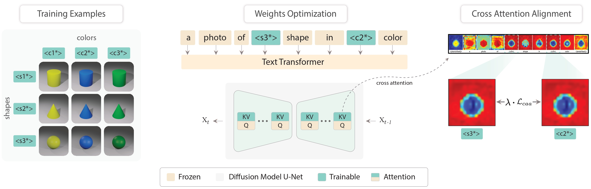
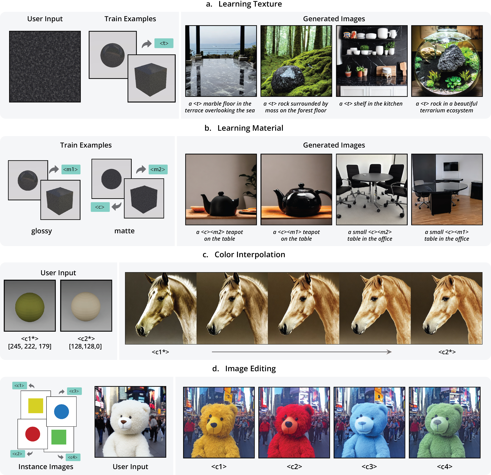
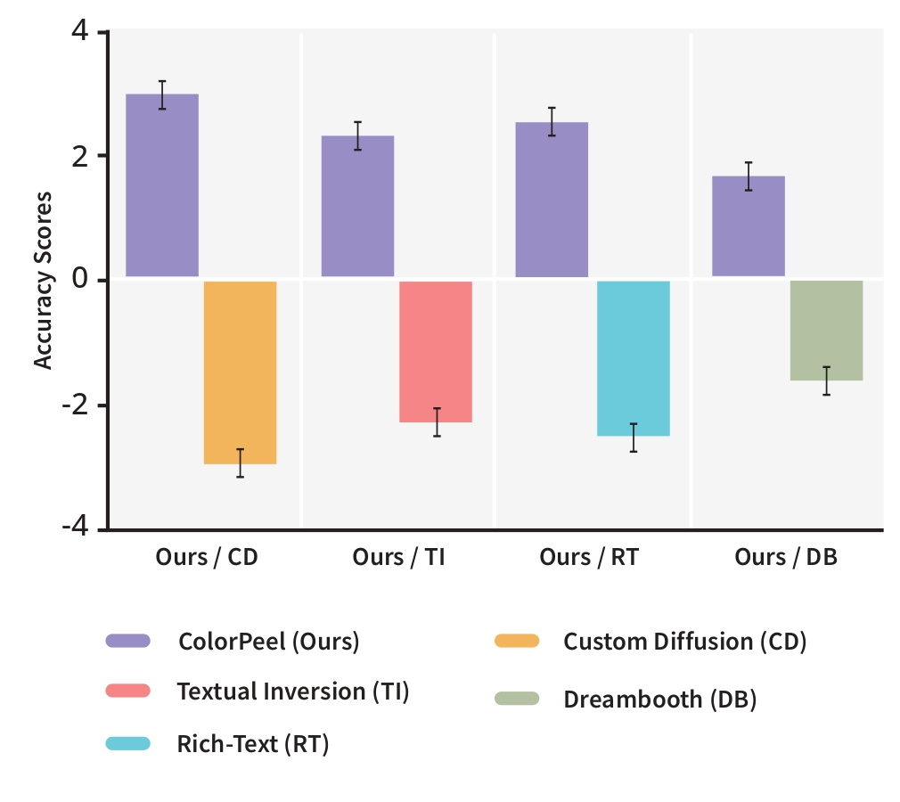

European Conference on Computer Vision (ECCV) 2024
Text-to-Image (T2I) generation has made significant advancements with the advent of diffusion models. These models exhibit remarkable ability to produce images based on textual prompts. Current T2I models allow users to specify object colors using linguistic color names. However, these labels encompass broad color ranges, making it difficult to achieve precise color matching. To tackle this challenging task, named as color prompt learning, we propose to learn specific color prompts tailored to user-selected colors. These prompts are finally employed to generate objects with the exact desired colors. Observing the existing T2I adaptation approaches cannot achieve satisfactory performance, we propose to generate basic geometric objects in the target color. Leveraging color and shape disentanglement, our method, denoted as ColorPeel, successfully assists the T2I models to peel off the novel color prompts from these colored shapes. In the experiments, we demonstrate the efficacy of ColorPeel in achieving precise color generation with T2I models and generalize ColorPeel to effectively learn abstract attribute concepts, including textures, materials, etc. Our findings provide a valuable step towards improving precision and versatility of T2I models, offering new opportunities for creative applications and design tasks.
Analyzing Color Fidelity and Transferability. (a) Given RGB values (of blue color) in the text prompt, Stable Diffusion fails to generate desired objects in specified colors and also lacks consistency in color fidelity when provided with specific color names. Comparatively, seminal new concept learning methods (b) Textual Inversion and (c) Dreambooth generate text-guided objects in specified colors; however, these are single concept learning baselines and also fail to generate consistent colored objects. (d) Custom Diffusion — multi-concept learning baseline, inter-mixes the colors while also reducing the sample variation, which leads to unintended outcomes.
we propose to generate a series of geometric shapes with target colors to disentangle (or peel off ) the target colors from the shapes. By jointly learning on multiple color-shape images, we found that the method can successfully disentangle the color and shape concepts.
Firstly, instance images along with the templates are generated, given the user-provided RGB or color coordinates. Next, we introduce new modifier tokens, i.e., <s> and <c> which correspond to shapes and colors to ensure the disentanglement of shape from color. Following Custom Diffusion, the key and value projection matrices in the diffusion model cross-attention layers are optimized along with the modifier tokens while training. To improve learning, we introduce cross attention alignment to enforce the color and shape cross-attentions.
Qualitative results of ColorPeel in single color and multi-color compositions.

Generalization of ColorPeel to Texture Learning, Material Learning, Color Interpolation, and Image Editing.
Thurstone case V results of our user’s study. Values are z-scores. Error bars represent 95% confidence intervals. Our method is statistical significantly better than existing methods — CD, DB, Rich-text, and TI
@article{butt2024colorpeel,
author = {Butt M. A., Wang K., Corral J. V., and Weijer J. V.,},
title = {ColorPeel: Color Prompt Learning with Diffusion Models via Color and Shape Disentanglement},
journal = {ECCV},
year = {2024},
}